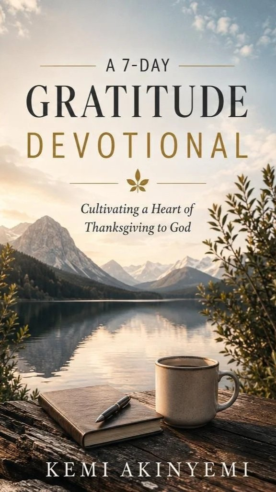
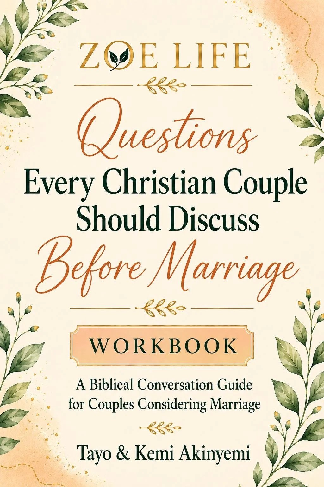
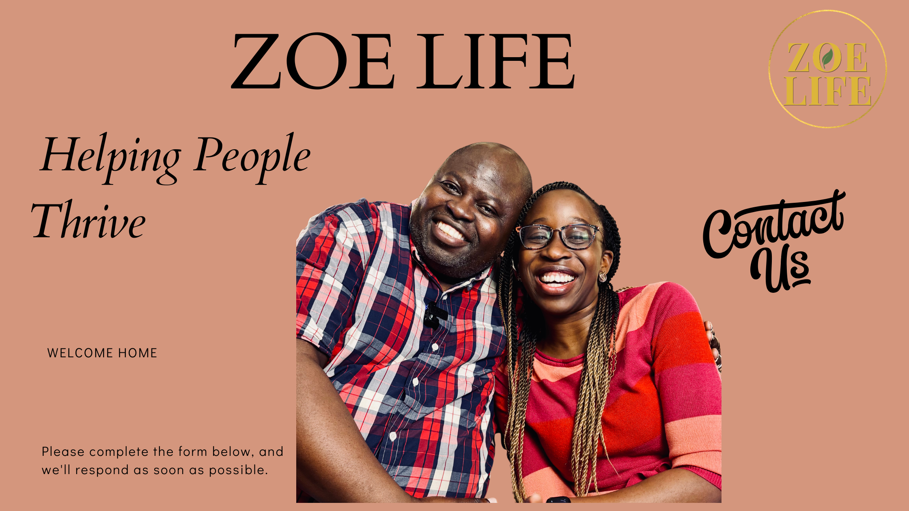

Relationships and Family
Marriage, premarital preparation, parenting, family life, communication and healthy relationships.

zoe life in its fullness
Biblical truth, practical wisdom and Christ-centered resources for every season of life.
A place to begin
Choose the word that feels closest today. This is a reflection tool, not an assessment.

Foundations and first decisions
Something new is taking shape: a marriage, a family rhythm, a degree, a role or a clearer life direction. This season calls for foundations you can return to.
Zoe Life serves people through biblical coaching, teaching, speaking, books, courses, workshops and church partnerships.
Marriage, premarital preparation, parenting, family life, communication and healthy relationships.
Education, career decisions, professional development, leadership, purpose and stewardship.

Spiritual growth, Christian living, discipleship, books, courses, speaking and practical biblical teaching.

The current Zoe Life site identifies Tayo and Kemi as its founders and as pastors of Life Springs Church.
They bring ministry experience, professional leadership, teaching, mentoring and coaching to relationships, family life, education, careers, stewardship and personal growth.
Scripture provides wisdom and direction for faith, relationships, work and daily life.
Ideas become useful when people can apply them to real choices, habits and conversations.
Each person and family brings a different story. The approach begins with respect and grace.
"I have come that they may have life, and have it to the full."
John 10:10
Featured resources
These are the two titles already shown publicly by Zoe Life. Select one to bring it forward.
Prices, release dates, purchase links and availability are not shown because they have not been confirmed for this concept.


Share the season you are in and the area you want to think through.

A free 20-minute consultation was discussed but has not been confirmed, so it is not offered here.